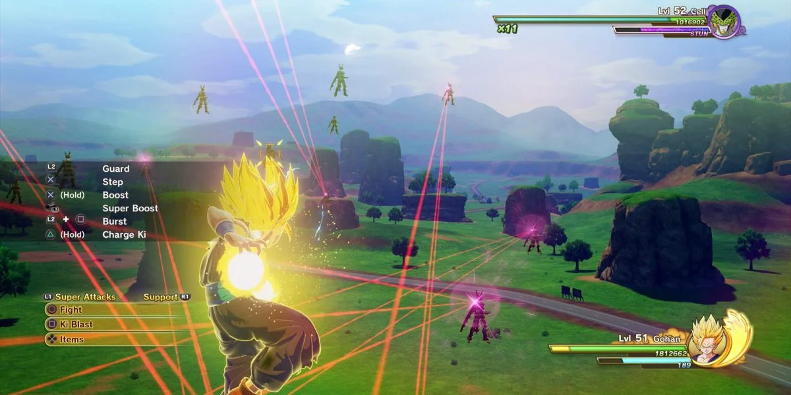
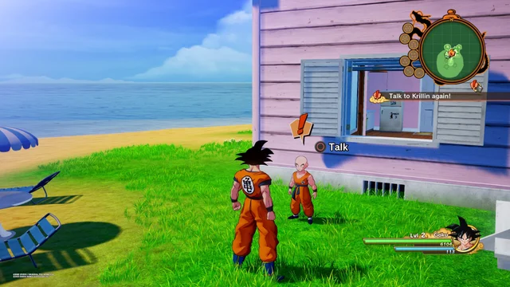
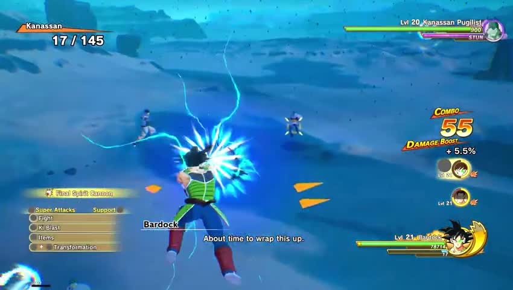
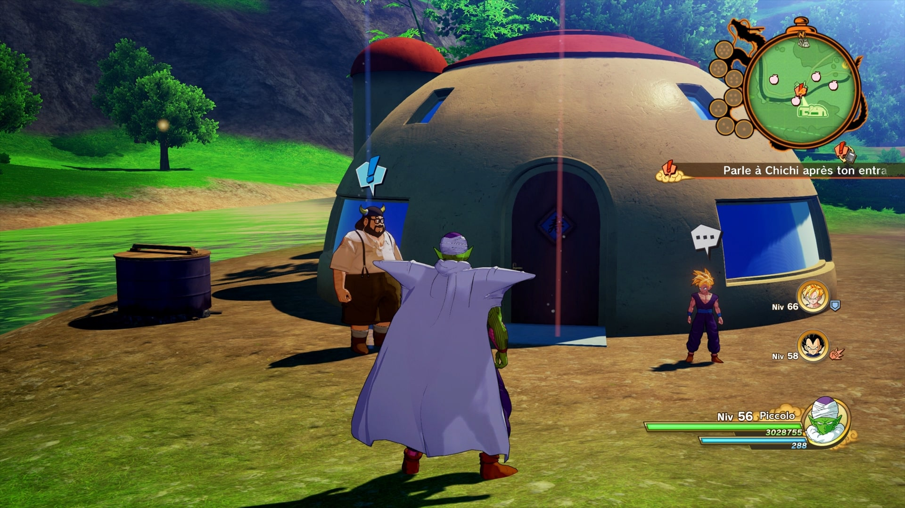

Dragon Ball Z: Kakarot adalah permainan video aksi RPG yang dikembangkan oleh CyberConnect2 dan diterbitkan oleh Bandai Namco Entertainment. Game ini dirilis pada Januari 2020 dan mengambil latar dari cerita Dragon Ball Z, memungkinkan pemain untuk mengendalikan karakter utama, Goku, serta karakter-karakter ikonik lainnya dari serial anime dan manga. Dalam game ini, pemain dapat menjelajahi dunia terbuka yang luas, menjalani misi utama dan sampingan, serta menghadapi berbagai musuh dari berbagai saganya. Fitur utama dari Dragon Ball Z: Kakarot mencakup pertarungan yang dinamis, di mana pemain dapat menggunakan serangan jarak dekat dan serangan energi, seperti Kamehameha, serta transformasi karakter ke bentuk yang lebih kuat, seperti Super Saiyan. Game ini juga menonjolkan elemen RPG, termasuk pengembangan karakter, di mana pemain dapat meningkatkan kemampuan dan statistik Goku dan karakter lainnya dengan mengumpulkan pengalaman dan item. Selain itu, ada elemen pengembaraan, seperti memancing dan berinteraksi dengan karakter lain, yang menambah kedalaman permainan.
Fitur Utama dan Media:
| Fitur | Deskripsi |
|---|---|
| Cerita Ikonik | Menghadirkan kembali cerita dari anime Dragon Ball Z, termasuk semua saga penting dari Raditz hingga Majin Buu. |
| Dunia Terbuka | Pemain dapat menjelajahi dunia yang luas, termasuk area terkenal seperti Planet Namek dan Kame House, dengan berbagai aktivitas dan misi sampingan. |
| Pertarungan Dinamis | Sistem pertarungan real-time yang memungkinkan pemain untuk menggunakan berbagai serangan jarak dekat dan serangan energi, serta transformasi karakter. |
| Pengembangan Karakter | Pemain dapat meningkatkan kemampuan karakter melalui sistem level dan keterampilan, serta mengumpulkan item untuk meningkatkan atribut. |
| Mini Games dan Aktivitas | Berbagai aktivitas tambahan, seperti memancing, memasak, dan berinteraksi dengan NPC, memberikan kedalaman lebih pada gameplay. |
| Speksifikasi |
|
| Link Download | https://store.steampowered.com/app/DRAGON_BALL_Z_KAKAROT/ |
| Gambar Gameplay |     |
| Trailer Game | Link You tube |